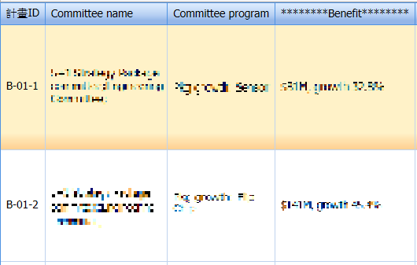
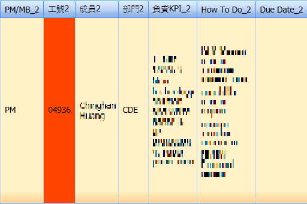
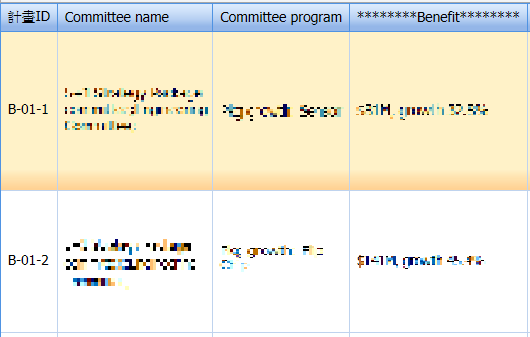
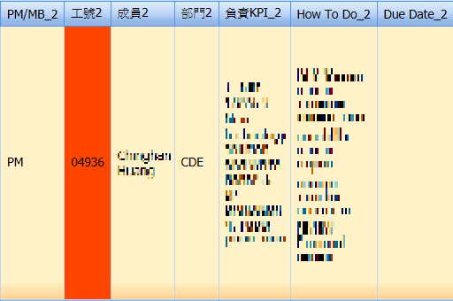
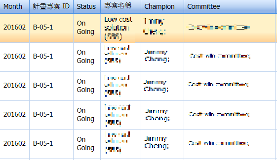
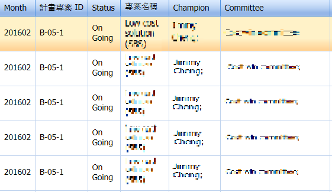

Work Content
(1)VB 轉C#暑期期間，我仍然有接新舊報表程式合併， 只是我們所改的code越來越難，設下篩選條件也變得複雜，在Oracle撈取資料的部分也更精進了些，像是我其中一個 報表會使用到Group By,一開始常常出現錯誤亦或跑不出資料，好不容易跑出資料後又跟舊報表呈現的資料有所錯誤， 著實費樂我不少功夫，但多下幾次條件後我也越來越上手，也慢慢發覺很多資料處理其實Oracle都可以達成，不需程式 去撰寫檢查條件等等。


(2)SPD Committee Analysis System
開發SPD Committee Analysis System，公司有分計劃(Program)與專案(Project)，這個系統分為8個專案維護。
FMI011 → Program Query
FMI012 → Project Query
FMI013 → Program Maintain
FMI014 → Project Maintain
FMI015 → Program Member Maintain
FMI016 → Project Member Maintain
FMI017 → Program / Project's Member Score Maintain
FMI018 → Member's Score Search
  
 
 
